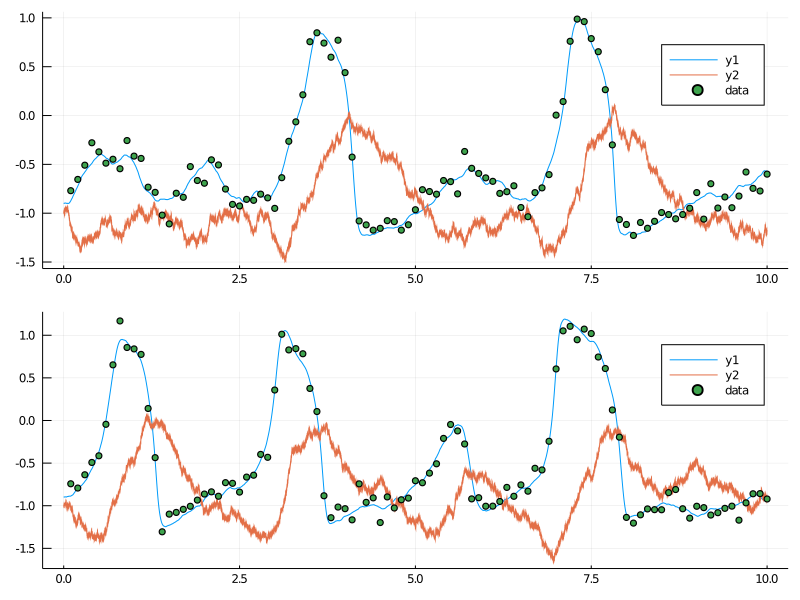
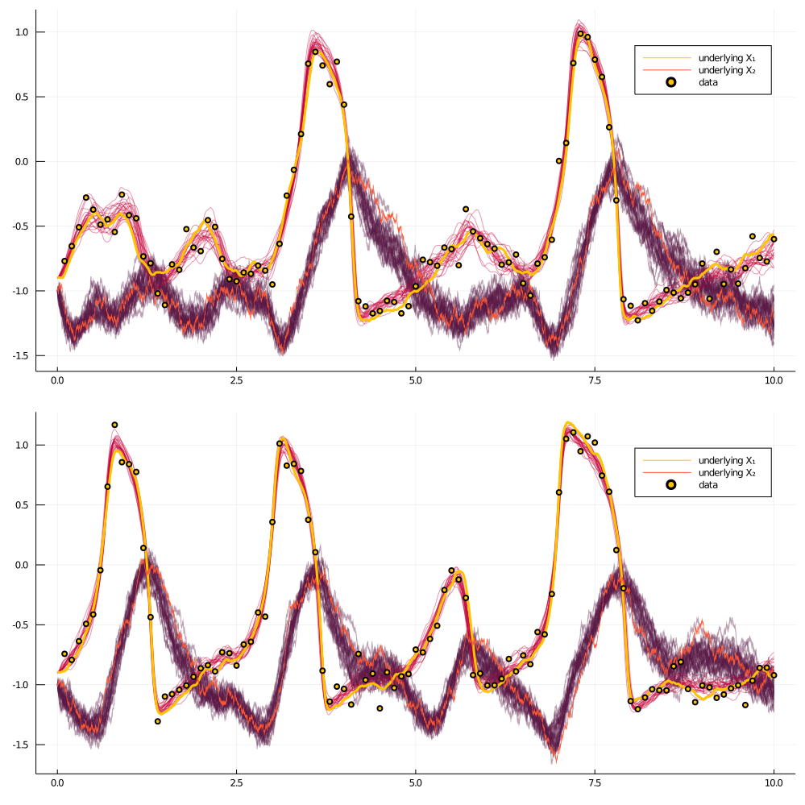

Inference with BlockEnsemble
Set up
using GuidedProposals, DiffusionDefinition, ObservationSchemes, DiffusionMCMCTools
const GP = GuidedProposals
const DD = DiffusionDefinition
const OBS = ObservationSchemes
const dMCMCt = DiffusionMCMCTools
using StaticArrays, Random, Plots, Distributions
# seed used for this tutorial
Random.seed!(100)
@load_diffusion FitzHughNagumo
θ = [0.1, -0.8, 1.5, 0.0, 0.3]
P = FitzHughNagumo(θ...)
tt, y1 = 0.0:0.0001:10.0, @SVector [-0.9, -1.0]
num_recs = 2
Xs = [rand(P, tt, y1) for i in 1:num_recs]
obs_scheme = ObsScheme(
LinearGsnObs(
0.0, (@SVector [0.0]);
L=(@SMatrix [1.0 0.0]),
Σ=(@SMatrix [0.01])
)
)
data = [collect(obs_scheme, Xs[i], 1000) for i in 1:num_recs]
all_obs = AllObservations()
add_recordings!(
all_obs,
[build_recording(P, data[i], 0.0, KnownStartingPt(y1)) for i in 1:num_recs]
)
add_dependency!(
all_obs,
Dict(
:γ_shared => [(1, :γ), (2, :γ)],
)
)
DD.var_parameter_names(::FitzHughNagumo) = (:γ,)
all_obs, _ = initialize(all_obs)
ps = [plot(Xs[i], Val(:vs_time)) for i in 1:num_recs]
[scatter!(ps[i], map(x->x.t, data[i]), map(x->x.obs[1], data[i]), label="data") for i in 1:num_recs]
plot(ps..., layout=(num_recs,1), size=(800, 300*num_recs))
The algorithm
customkernel(θ, scale=0.1) = θ .+ 2.0*scale*(rand()-0.5)
function accept_reject_proposal_param!(bc, mcmciter, θ, θ°)
accepted = rand(Exponential(1.0)) > -(fetch_ll°(bc)-fetch_ll(bc))
accepted && swap_XX!(bc)
accepted && swap_PP!(bc)
save_ll!(bc, mcmciter)
accepted && swap_ll!(bc)
accepted, copy(accepted ? θ° : θ)
end
function simple_inference(AuxLaw, all_obs, dt, _θ; ϵ=0.3, ρ=0.5, num_steps=10^4)
# making sure that things are in order...
_pname = collect(keys(_θ))
# for simplicity restrict to inference for a single param
@assert length(_pname) == 1
pname = first(_pname)
θ = collect(values(_θ))
# setting the initial guess θ inside the recording
OBS.set_parameters!(all_obs, _θ)
# setting up containers
tts = OBS.setup_time_grids(all_obs, dt, standard_guid_prop_time_transf)
se = SamplingEnsemble(AuxLaw, all_obs.recordings, tts)
be = BlockEnsemble(
se,
collect([[1:length(rec.obs)] for rec in all_obs.recordings]),
ρ,
num_steps
)
name_struct = ParamNamesAllObs(be, _pname, all_obs)
loglikhd!(be)
paths = []
θθ = [θ]
a_h = Bool[]
crit_change = collect([[true] for rec in se.recordings])
for i in 1:num_steps
draw_proposal_path!(be)
accept_reject_proposal_path!(be, i)
θ° = customkernel(θ, ϵ)
set_proposal_law!(be, θ°, name_struct, crit_change)
accpt, θ = accept_reject_proposal_param!(be, i, θ, θ°)
push!(θθ, θ)
push!(a_h, accpt)
# progress message
if i % 100 == 0
println(
"$i. ll=$(ll_of_accepted(be, i)), ",
"imp a-r: ",
" $(accpt_rate(be, (i-99):i)), ",
"updt a-r: ",
"$(sum(a_h[(i-99):i])/100)."
)
end
# save intermediate path for plotting
i % 400 == 0 && append!(
paths,
[[deepcopy(rec.u.XX) for rec in se.recordings]]
)
end
paths, θθ
endResults
using OrderedCollections
θ = OrderedDict(:γ_shared=>1.5)
@load_diffusion FitzHughNagumoAux
DD.var_parameter_names(::FitzHughNagumo) = (:γ,)
DD.var_parameter_names(::FitzHughNagumoAux) = (:γ,)
paths, θθ = simple_inference(
FitzHughNagumoAux, all_obs, 0.001, θ; ϵ=0.3, ρ=0.96, num_steps=10^4
)
plot(getindex.(θθ, 1))
function glue_paths(XX)
XX_glued = trajectory(
glue_containers( map(x->x.t, XX) ),
glue_containers( map(x->x.x, XX) ),
)
end
function glue_containers(xs)
glued_xs = collect(Iterators.flatten(map(x->x[1:end-1], xs)))
append!(glued_xs, [xs[end][end]])
glued_xs
end
convenient_paths = [glue_paths.(getindex.(paths, i)) for i in 1:num_recs]
col = ["#581845", "#900C3F", "#C70039", "#FF5733", "#FFC300"]
p = collect([plot() for i in 1:num_recs])
for i in 1:num_recs
for path in convenient_paths[i]
plot!(p[i], path, Val(:vs_time), alpha=0.4, label="", color=[col[3] col[1]])
end
plot!(p[i], Xs[i], Val(:vs_time), color=[col[5] col[4]], linewidth=[3 0.5], label=["underlying X₁" "underlying X₂"])
scatter!(p[i], map(x->x.t, data[i]), map(x->x.obs[1], data[i]), label="data", markercolor=col[5])
end
plot(p..., layout=(num_recs, 1), size=(1000, 500*num_recs))